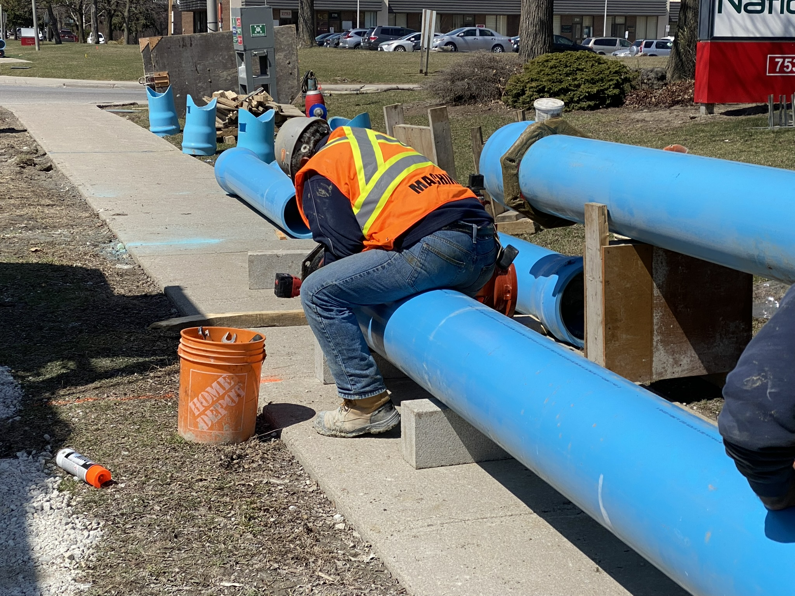

Founded in 2019, Machina Construction Ltd. was built on a strong foundation of experience, expertise, and a shared vision for excellence in the sewer and watermain industry. The founders of Machina began working under the guidance of their father, one of two sole owners of Pachino Construction Co. Ltd., where they developed their industry knowledge and hands-on experience. This experience played a pivotal role in shaping their understanding of the industry, instilling the values of quality workmanship, accountability, and operational excellence that continue to guide Machina today.
